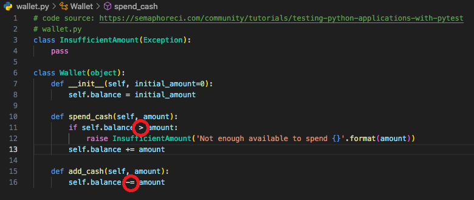

pytest and Test-Driven Development
Codio Activity - pytest
The following task involves experimenting with pytest using the Python programming language. Amend the code so that the tests fail.
Original Code
Modified Code

Modified Code
Changes to the comparison and assignment statements caused the failure of 3 tests. These results show the benefit of using tools like Pytest, especially in test-driven development (TDD). As an iterative methodology, TDD requires writing automated tests that will be used in all stages of the software development. In opposition to the traditional approach, in TDD, developers write failing tests before the creation of production code; this production code is written to pass the tests (Agha et al., 2023).
As we notice, Pytest shows us log messages and presents them organised, highlighting the errors per test case.
References
Agha, D., Sohail, R., Meghji, A., Qaboolio, R., & Bhatti, S. (2023) Test Driven Development and
Its Impact on Program Design and Software Quality: A Systematic Literature Review. VAWKUM
Transactions on Computer Sciences. 11(1):268-280. DOI:
http://dx.doi.org/10.21015/vtcs.v11i1.1494